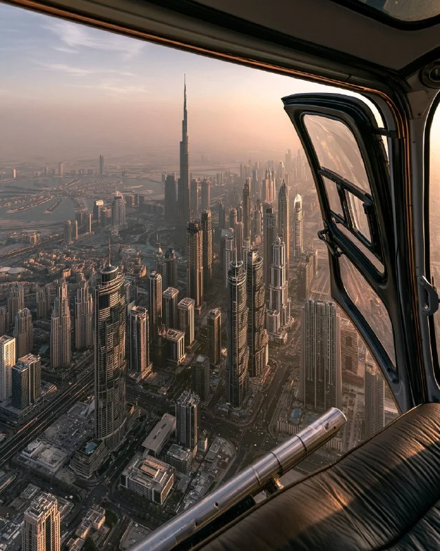

NIGHTLIFE • DINING • SKYLINE VIEWS
Dubai transforms after sunset into a city of illuminated skyscrapers, waterfront promenades, rooftop venues and unforgettable evening experiences.
Nighttime is one of the best times to explore Dubai. Cooler temperatures, vibrant districts and illuminated landmarks create a completely different atmosphere from the daytime city.
The Dubai Fountain remains one of the city's most popular evening attractions. Located beside Burj Khalifa and Dubai Mall, the fountain performances combine water, music and light.
Dubai Marina comes alive at night with restaurants, waterfront walks, yacht views and illuminated skyscrapers.
The Marina Walk is one of the city's most popular evening destinations.
Palm Jumeirah offers luxury dining, beachfront experiences and spectacular views of the Dubai skyline after sunset.
Dubai's rooftop venues provide panoramic views of:
• Burj Khalifa
• Downtown Dubai
• Dubai Marina
• Palm Jumeirah
• Sheikh Zayed Road
Several districts offer evening shopping, outdoor dining and entertainment experiences including:
• Dubai Creek
• Bluewaters Island
• City Walk
• JBR
• Souk Al Bahar
Dubai's dining scene is particularly active in the evenings, with luxury restaurants, waterfront venues and international cuisine available across the city.
Evening desert excursions remain one of Dubai's most memorable experiences.
Popular activities include:
• Sunset viewing
• Stargazing
• Traditional entertainment
• Desert dining experiences
Nighttime provides some of the best photography opportunities in Dubai.
Top locations include:
• Burj Khalifa District
• Dubai Marina
• Palm Jumeirah
• Dubai Creek Harbour
• Bluewaters Island
Dubai's energy doesn't stop when the sun goes down. From waterfront districts and rooftop venues to cultural attractions and fine dining, the city offers countless experiences for visitors exploring Dubai at night.